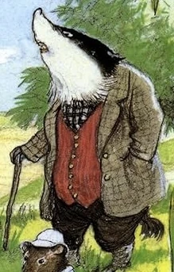

?

Badger has a distinctive appearance as partially described by Rat on page 31, “His hair, once black, now has a
broad streak of grey down it” The grey streak signifies age and wisdom, it also makes him stand out when
compared to his species typical. He displays an air of authority and strength, and his solid build emphasises
his role as a figure of stability and wisdom. Badger is often dressed in his dressing gown which again displays
how he is constantly within his home. Rat explains that Badger is extremely shy and isn’t at all interested in
extending or accepting dinner invitations; in fact, he prefers to keep to himself. And while this kind of
behaviour would be seen as rude in another animal, with Badger it’s just accepted as he has proven on multiple
occasions that he doesn’t seek or need the attention of others.